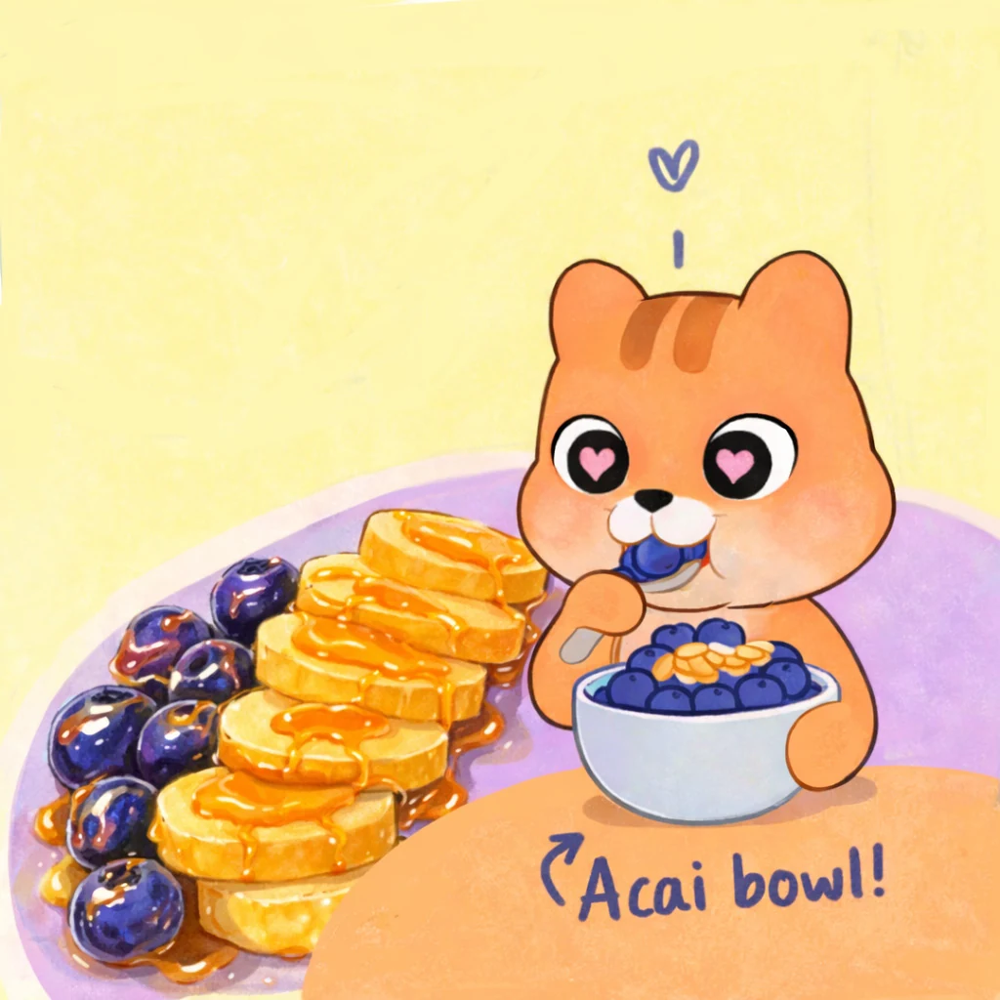
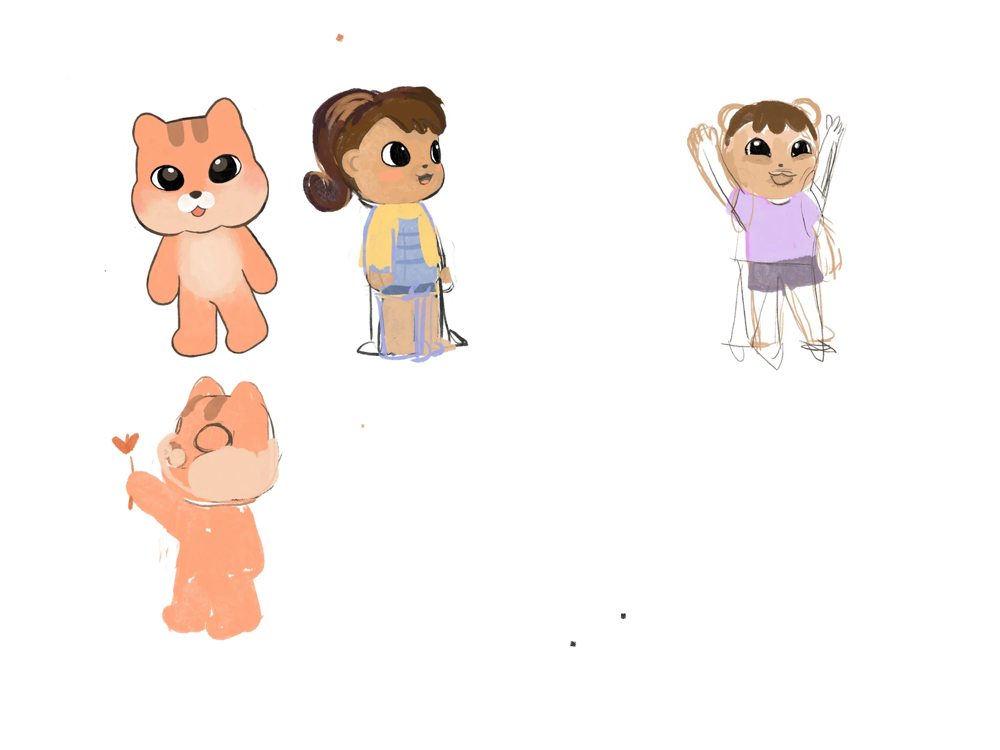
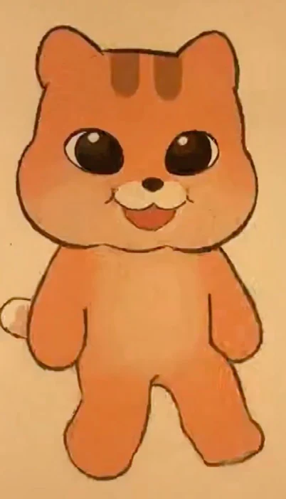
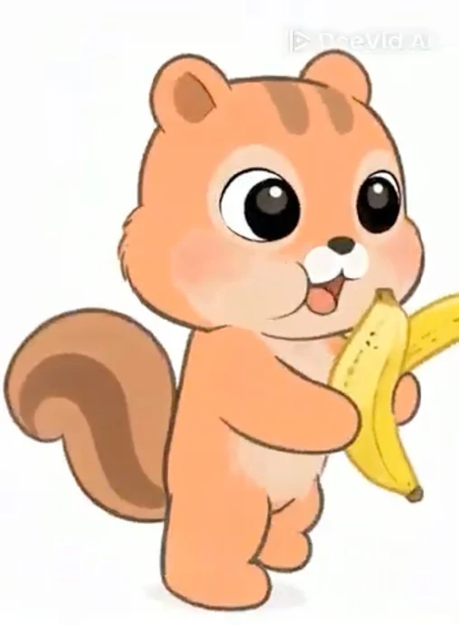
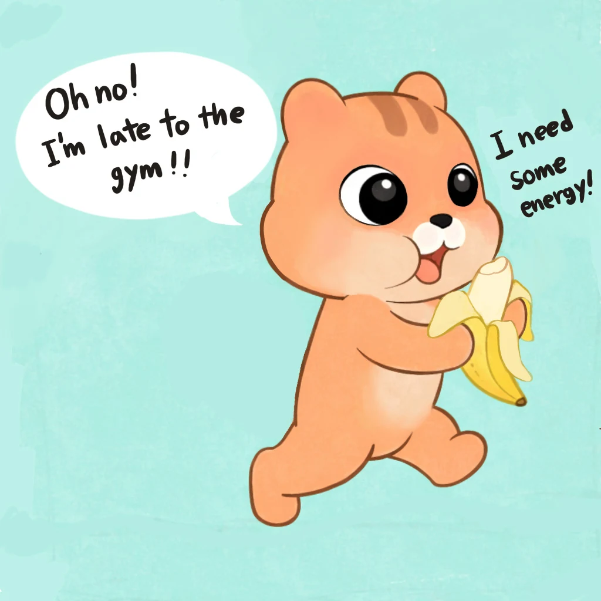

A Research through Design inquiry into data-driven visual storytelling and generative AI co-creation



Research through Design
PMOS.Comics is framed as a Research through Design inquiry: making, sharing, and revising the comics is both the design outcome and the research method. Each episode becomes an artifact through which I investigate how personal health data can be transformed into narrative, and how creative agency is negotiated when generative AI joins the process.
Graphic pathography uses comics to communicate what it feels like to live with illness. It can make emotional, social, and embodied experiences visible, but these stories rarely incorporate the quantitative patterns recorded by health technologies.
Data comics offer the complementary structure: they use panels, sequence, annotation, and visualization to make data easier to follow. PMOS.Comics explores a hybrid form—data-driven graphic pathography—that situates personal health data inside the lived experience that gives it meaning.
Lived experience and emotional context
Illness is represented through pacing, character, metaphor, and personal narrative.
Evidence and temporal structure
Graphs, annotations, and sequential panels help an audience follow change over time.
Can data become narrative material?
Personal metrics are treated as something to interpret and express—not only optimize.
From Data to Narrative
I began with one day of continuous glucose monitoring data from the Lingo app. I selected a segment that captured changes around eating a banana, exercising, and having an açai bowl, then mapped the line across three comic panels.
Select an episode
Identify a meaningful change in the data and reconnect it to food, activity, and surrounding events.
Embed the graph
Use the panel edge as an axis and the glucose line as both visualization and visual metaphor.
Add lived context
Show the feelings, bodily interpretations, and decisions that a numerical trace cannot communicate alone.
Human-AI Co-Creation
Generative AI entered the process after the narrative direction and storyboard were already established. I wanted help producing poses and refining scenes, while retaining authorship over the character, data, and final visual language.

Design an original character
I drew Hazel as a human-like chipmunk to represent aspects of my identity and anchor the series in an original visual language.


Compare tools using the same prompt
Video-generation tools produced different poses, but each altered facial features, body proportions, or movement in distinct ways.


Retouch instead of accepting the output
I combined useful generated poses with my storyboard, then returned to Procreate and Illustrator to correct details, redraw data, and restore stylistic consistency.
An Evolving Practice
The project developed across four episodes, moving from a single health-data story to a broader public-facing comics and animation practice.
Glucose changes after a sugary snack
A data-driven comic connecting a banana, exercise, an açai bowl, and the glucose changes that followed.
Eating over-fermented sourdough
A 14-panel narrative about craving bread, making sourdough, and revisiting glucose data the following day.
Grilled chicken with(out) rice
A conversation with an anthropomorphized PMOS character about fatigue, food choice, and a rapid glucose increase.
Introducing the series
A short-form animated Reel explaining Hazel, my relationship with PMOS, and why I began sharing these stories publicly.
What I Had to Negotiate
My experience ↔ our experience
The story begins with personal reflection, but public storytelling also asks what will feel relatable, shareable, and useful to people navigating similar experiences.
Efficiency ↔ creative agency
AI can accelerate pose and scene production, yet every delegation creates a decision about what visual inconsistency or outside influence is acceptable.
Creator ↔ patient ↔ researcher
The creator values expression and quality, the patient values authenticity and care, and the researcher values accuracy and transparency. No single role always wins.
Reflections
Human-AI co-creation was not a seamless handoff from idea to polished image. It was an ongoing negotiation over initiative, consistency, ownership, and when to accept or reject an unexpected suggestion.
Protect the narrative core
Create the story structure and data interpretation before inviting AI into the visual-production process.
Keep critical information human-controlled
Health-data graphs, annotations, and factual relationships were redrawn manually rather than delegated to image generators.
Document creative decisions
Recording prompts, outputs, revisions, and manual edits makes human contribution visible, although that documentation adds labor to the creative process.
Treat surprise as a proposal
An AI suggestion can reveal a useful alternative, but the creator remains responsible for deciding whether it belongs in the work.
PMOS.Comics is ongoing research. The series continues to explore how personal health data can support reflection and communication while keeping lived experience, authorship, and visual storytelling at the center.